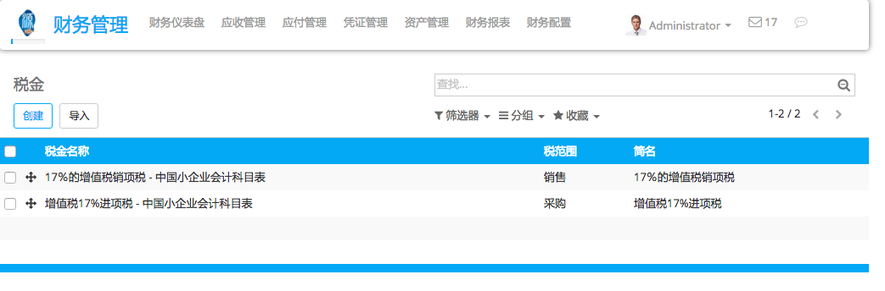

YuanCloud's tax engine is very flexible and support many different type of taxes: value added taxes (VAT), eco-taxes, federal taxes, retention, withholding taxes, etc. For most countries, the chart of account you setup is automatically pre-configured with the main taxes of the country.
该章节详细的介绍了如何在特定情景中定义新的税。
管理税
定义新的税
In order to create new taxes, use the menu in the accounting application. From this menu, you will get all the taxes you can use: sales taxes and purchase taxes.
在创建新的税的时候，你可以设置如下信息：
范围：销售，采购或者没有(例如，过时的税收)
- Tax Account: is the account where the tax journal item will be posted. This field is optional, if you keep it empty, YuanCloud posts the tax journal item in the income account.
- Label on Invoices: a short text on how you want this tax to be printed on invoice line. For example, a tax named "21% on Services" can have the following label on invoice "21%".
- Tax Group: defines where this tax is summed in the invoice footer. All the tax belonging to the same tax group will be grouped on the invoice footer. Examples of tax group: VAT, Retention.
- Include in Analytic Cost: the tax is counted as a cost and, thus, generate an analytic entry if your invoice uses analytic accounts.
- Tags: are used for custom reports. (usually, you can keep this field empty)
税有不同的计算机制：
固定的，例如：每节电池1.34元的生态税
百分比，例如：15%的销项税
价格的百分比，含税：例如巴西
税组：能使用复合税
注解
if you need more advanced tax mechanism, you can install the module account_tax_python and you will be able to define new taxes with Python code.
If a tax is included in price, it means that the price set on the product form includes this tax. As an example, let's say you have a product with a sale tax of 10%. The sale price on the product form is $100.
如果价格中不含税，你会得到：
不含税价格： $100
税：$10
待支付总计： $110
如果税包含在价格中
不含税价格：90.91
税： $9.09
总计待支付：$100
停止使用税
If you want to avoid using a tax, you can not delete it because the tax is probably used in several invoices. So, in order to avoid users to continue using this tax, you should set the field Tax Scope to None.
设置默认税
Once you have created your taxes, you can define which tax is the default one when creating new products (for sales and purchase taxes). To set the default taxes, in the accounting application, go in the menu .
Once taxes are set by default, when you create a new product, YuanCloud will propose you the right taxes by default on the product form.
注解
Setting the default taxes impact the creation of product, but not sales order or invoices. The tax used on sales order or invoices is defined by the product on the sale order line.